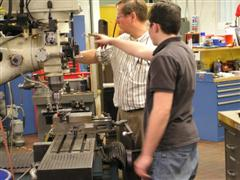
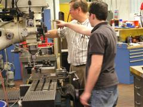
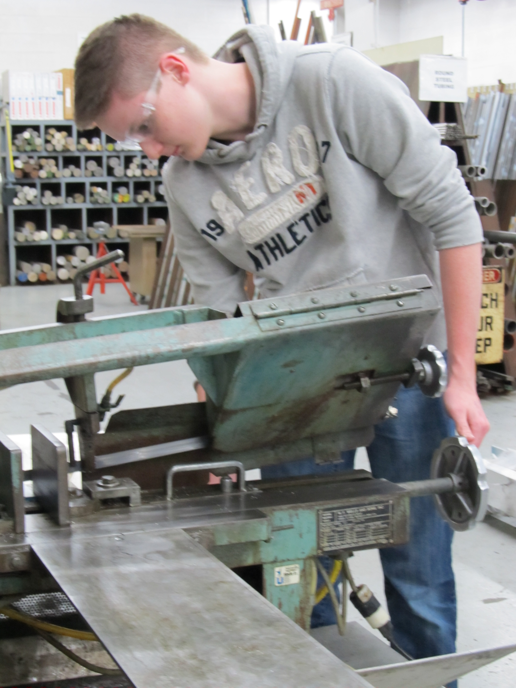

The Lathe
The lathe is used to shape pieces of metal by holding, rotating, and cutting them. Video Resources: |

The MillThe mill uses a cutting process to remove excess metal from a piece. Video Resources: |


Student members of the HOT Team machining group work with mentors in the GMPG central machine shop. Students learn to use band-saws, shears, breaks, grinders, buffing machines, the Eisele saw, ProtoTrak CNC Bridgeport mills, manual lathes, EZ Path CNC Lathes, TIG welder, and FLOW Jet water jet. Students apply the skills they have learned to produce components for the HOT-Bot, the HOT cart, the practice playing field and CASEY (the team community service robot) with these tools.
The Lathe
The lathe is used to shape pieces of metal by holding, rotating, and cutting them. Video Resources: |

The MillThe mill uses a cutting process to remove excess metal from a piece. Video Resources: |

The Drill PressThe drill press is a mounted drill used to create holes in pieces of metal. |

The Band SawThe band saw is used to make curved or irregular cuts in sheet metal. |

The Belt SanderThe belt sander is used to remove burrs and smooth out the edges of a metal piece. |